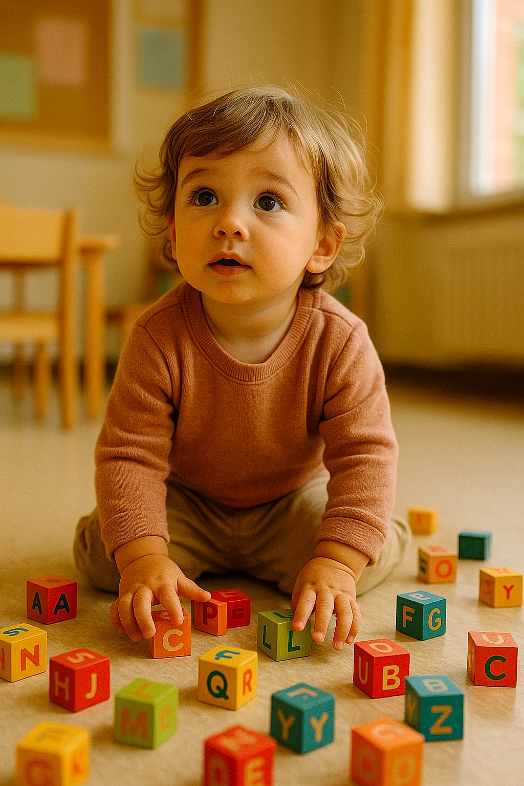

01 · Decisão
Qual a Idade Certa para Começar na Escola Bilíngue? Um Guia para Famílias de Bento Gonçalves

Se a sua família vive em Bento Gonçalves — ou vem de Garibaldi, Farroupilha, Carlos Barbosa e outras cidades da Serra Gaúcha —, é bem provável que esta dúvida já tenha aparecido em casa: será que meu filho é pequeno demais (ou grande demais) para entrar em uma escola bilíngue? É uma das perguntas que mais escutamos das famílias que nos visitam na Alameda Fenavinho. A boa notícia: a ciência tem respostas bastante consistentes. Neste guia, você vai ver o que a neurociência descobriu sobre a aquisição de um segundo idioma na infância, o que cada faixa etária tem de especial e como reconhecer o momento mais adequado para a sua família dar esse passo.
O Que Acontece no Cérebro de uma Criança que Cresce com Dois Idiomas
Antes de falar em idade ideal, vale conhecer o terreno onde tudo acontece: o cérebro infantil. Do nascimento até por volta dos 7 anos, a criança atravessa o que os neurocientistas descrevem como período sensível da linguagem — uma fase em que a plasticidade cerebral está no seu ponto mais alto e novas conexões neurais se formam em velocidade impressionante.
Nessa etapa, não há "estudo" envolvido. Sons, vocabulário e estruturas gramaticais entram pelo convívio, pela brincadeira, pela rotina — exatamente como acontece com o português falado em casa. A criança não estuda o segundo idioma: ela o incorpora enquanto vive, de forma orgânica e sem esforço consciente.
O cenário muda bastante depois dos 12 anos. Daí em diante, aprender uma língua passa a exigir estratégias deliberadas — decorar regras, traduzir mentalmente, praticar de propósito. É um caminho possível, porém mais lento, e a fluência alcançada costuma ficar menos completa. O sotaque estrangeiro, por exemplo, tende a permanecer mais marcado quando o contato com o idioma só começa nessa fase.
A Tal "Janela de Oportunidade"
Um achado da Universidade de Washington ilustra bem o tamanho dessa janela: bebês entre 7 e 10 meses já distinguem fonemas de línguas estrangeiras com enorme precisão — e essa habilidade começa a enfraquecer logo após o primeiro aniversário quando não existe exposição contínua. Ou seja, o "ouvido bilíngue" se forma muito antes do que a maioria dos pais imagina, e a imersão precoce aproveita essa capacidade no seu auge.
Quem convive com dois idiomas desde os primeiros anos costuma colher ganhos cognitivos que vão muito além da língua: mais capacidade de atenção, melhor desempenho na resolução de problemas e facilidade ampliada para aprender um terceiro idioma lá na frente. O bilinguismo precoce é um patrimônio que acompanha a criança pela vida inteira.
Faixa a Faixa: Em Que Momento Entrar na Escola Bilíngue?
Cada etapa da primeira infância tem características próprias — e todas elas conversam de um jeito diferente com a imersão em um segundo idioma. A tabela abaixo usa como referência os estágios reais oferecidos na Maple Bear Bento Gonçalves:
| Idade | Estágio na Maple Bear BG | Como o idioma é vivido | Leitura da janela |
|---|---|---|---|
| A partir de 18 meses | Bear Care | Os dois idiomas chegam juntos, no colo e na rotina de cuidado | Pico da plasticidade cerebral — o momento mais privilegiado |
| 2 anos | Toddler | Explosão de vocabulário acontecendo nas duas línguas ao mesmo tempo | Janela excelente — absorção espontânea, sem esforço |
| 3 anos | Nursery | Músicas, histórias e brincadeiras guiadas em inglês no dia a dia | Imersão lúdica em ritmo acelerado |
| 4 anos | Junior Kindergarten | Frases completas e pequenas narrativas nos dois idiomas | Muito favorável — consolidação da oralidade bilíngue |
| 5 anos | Senior Kindergarten | Primeiros passos do letramento em inglês e em português | Base sólida para a alfabetização nas duas línguas |
| 6 anos em diante | Year 1 — Fundamental (na unidade a partir de 2027) | Leitura, escrita e conteúdos acadêmicos conduzidos em inglês | Favorável — o cérebro segue bastante plástico nessa fase |
O recado da tabela é direto: o período anterior aos 6 anos reúne as condições mais favoráveis para a imersão bilíngue. Isso não transforma um início mais tardio em tempo perdido — apenas indica que, depois dessa fase, o percurso precisa ser desenhado com estratégias pedagógicas diferentes.
Educação Infantil Bilíngue: Onde Tudo Começa
Falar em educação infantil bilíngue não é falar de "aula de inglês para criança pequena". Em uma proposta de imersão de verdade, o idioma permeia o dia inteiro: a acolhida da manhã, a história antes do lanche, a música na troca de atividades, as orientações da professora. O inglês deixa de ser conteúdo e vira ambiente — algo que a criança respira, não que ela estuda.
É assim que funciona na Maple Bear Bento Gonçalves, que desde 2025 atende famílias da cidade — e também de Garibaldi, Farroupilha, Monte Belo do Sul, Pinto Bandeira e Carlos Barbosa. A jornada começa no Bear Care, a partir dos 18 meses, em um espaço pensado para os bebês: educadores bilíngues conduzem as atividades em inglês com leveza, respeitando o sono, o ritmo, os vínculos e as necessidades emocionais de cada um.
O Diferencial da Metodologia Canadense
O programa da Maple Bear nasce das práticas do sistema educacional do Canadá — referência mundial em qualidade de ensino — e se apoia em alguns pilares:
- Inglês por imersão desde a primeira infância, e não como disciplina isolada na grade
- Projetos investigativos que colocam a criança no papel de quem pergunta e descobre
- Acompanhamento por portfólio, que olha o percurso individual em vez de notas de prova
- Cuidado socioemocional como eixo estruturante de toda a rotina
- Metacognição — a criança aprende, desde cedo, a perceber como ela mesma aprende
O resultado é um inglês que não anda separado do resto: ele cresce junto com o desenvolvimento intelectual, emocional e social da criança, integrado a tudo o que ela vive na escola.
💡 Quer ver isso na prática?
Agende uma visita à Maple Bear Bento Gonçalves e conheça nossa metodologia pessoalmente.
Agendar Visita GratuitaO Que É Mito e O Que É Fato Quando se Fala em Começar Cedo
Toda família chega com receios — e isso é saudável. Antes de tomar a decisão, vale separar o que a ciência confirma do que é apenas crença repetida de geração em geração:
❌ Mito: "Duas línguas ao mesmo tempo vão confundir a cabeça da criança"
Fato: a pesquisa mostra o contrário. Crianças bilíngues constroem dois sistemas linguísticos que funcionam em paralelo, de forma independente. Quando misturam palavras das duas línguas na mesma frase — a chamada mistura de códigos — estão, na verdade, exibindo um processamento ativo dos dois idiomas. É um comportamento passageiro e completamente esperado.
❌ Mito: "O ideal é esperar a alfabetização, lá pelos 6 anos"
Fato: adiar o início significa abrir mão justamente do trecho mais fértil do período sensível. A neurociência aponta na direção oposta: quanto antes a imersão acontece, mais natural é a absorção do idioma pelo cérebro infantil.
❌ Mito: "O português vai ficar para trás"
Fato: língua materna e segundo idioma não disputam espaço — eles se fortalecem mutuamente. Em escolas bilíngues estruturadas, o português recebe atenção dedicada e se desenvolve com a mesma robustez, lado a lado com o inglês, em crianças que vivem uma imersão de qualidade.
✅ Fato: Começar cedo é oferecer oportunidade, não fazer cobrança
Na educação infantil bilíngue bem conduzida, não existe "aula puxada" para criança pequena. Existe brincadeira, música, tinta, histórias — e o inglês surge como consequência natural desse cotidiano. O que sustenta o processo é o ambiente afetivo e seguro, nunca a pressão por desempenho.
A Academia Americana de Pediatria (AAP) e a grande maioria dos pesquisadores em neurociência e linguística recomendam a exposição precoce a mais de um idioma como uma estratégia valiosa para o desenvolvimento cognitivo infantil. Os benefícios estão amplamente documentados na literatura; evidências de prejuízo, por outro lado, não existem.
Meu Filho Já Passou da Educação Infantil. Perdi o Trem?
De jeito nenhum. A janela mais intensa favorece quem começa cedo, mas o bilinguismo entrega ganhos reais em qualquer idade — o que muda é o desenho pedagógico do caminho, que passa a combinar imersão com estratégias mais estruturadas.
Para crianças em idade de Ensino Fundamental, uma escola bilíngue proporciona:
- Fluência construída dentro de contextos acadêmicos reais, e não em exercícios soltos
- Caminho aberto para certificações e exames internacionais no futuro
- Repertório global cada vez mais valorizado em qualquer carreira
- Autonomia, pensamento crítico e postura de liderança como marcas formativas
- Convivência com outras culturas e uma visão de mundo sem fronteiras
Em Bento Gonçalves, esse próximo capítulo já tem data: a Maple Bear Bento Gonçalves amplia sua oferta para o Year 1, primeira etapa do Ensino Fundamental, a partir de 2027. É a continuidade natural para as turmas que concluem o Senior Kindergarten — e uma porta de entrada para famílias da região que buscam um percurso bilíngue além da educação infantil.
Cinco Critérios para Escolher Bem a Escola Bilíngue
Definir o momento de começar é metade da decisão; a outra metade é acertar na escola. Estes cinco pontos ajudam a separar propostas sérias de promessas de marketing:
1. Imersão de Verdade, Não Inglês Decorativo
Investigue se o inglês é a língua que conduz o cotidiano da escola — com educadores nativos ou bilíngues certificados à frente das atividades — ou se aparece apenas como algumas aulas penduradas na grade. O impacto dessa diferença no resultado final é enorme.
2. Quem Está na Sala com Seu Filho
Pergunte pela formação pedagógica da equipe, pela certificação de proficiência no idioma e por como a escola seleciona, treina e atualiza seus professores ao longo do ano letivo.
3. Método com Lastro, Não Improviso
Dê preferência a propostas pedagógicas estruturadas, apoiadas em evidências e validadas em escala. O currículo canadense aplicado pela Maple Bear, presente em mais de 30 países, é um exemplo de método com histórico consistente de resultados reconhecidos.
4. Acolhimento que Se Percebe na Visita
Para os pequenos, segurança emocional pesa tanto quanto currículo. Agende uma visita, circule pelos espaços, observe como as crianças interagem com os adultos — e confie também na sua percepção de pai ou mãe.
5. Avaliação que Respeita a Infância
Desconfie de provas tradicionais aplicadas a crianças pequenas. O registro por portfólio — prática adotada na Maple Bear — documenta a evolução real de cada aluno de maneira qualitativa e respeitosa, sem reduzir a infância a uma nota.
Se a sua família está em Bento Gonçalves, Garibaldi, Farroupilha, Carlos Barbosa, Monte Belo do Sul ou Pinto Bandeira, venha conhecer a Maple Bear Bento Gonçalves: a escola fica na Alameda Fenavinho, 168, no bairro Fenavinho, e recebe visitas agendadas durante todo o ano.
Perguntas Frequentes das Famílias de Bento Gonçalves e Região
Com quantos meses ou anos meu filho pode entrar na Maple Bear Bento Gonçalves?
O ingresso pode acontecer a partir dos 18 meses, no estágio Bear Care. Essa faixa coincide com o auge da plasticidade cerebral e com a fase mais natural de aquisição da linguagem — por isso é uma das portas de entrada mais recomendadas pelos especialistas. Dali em diante, a criança avança pelo Toddler (2 anos), Nursery (3 anos), Junior Kindergarten (4 anos) e Senior Kindergarten (5 anos).
Meu filho está com 6 ou 7 anos e nunca teve contato com inglês. Ainda faz sentido?
Faz, e muito. Nessa idade o cérebro continua altamente receptivo, e a adaptação a um ambiente imersivo costuma acontecer em poucos meses quando há metodologia adequada e acompanhamento próximo da escola. Para quem está em Bento Gonçalves e região, vale acompanhar a chegada do Year 1 em 2027, que estende o percurso bilíngue da unidade para o Ensino Fundamental.
O inglês por imersão pode prejudicar o português?
Não — e esse talvez seja o mito mais desmontado pela pesquisa científica. As duas línguas se desenvolvem de forma complementar, e escolas bilíngues sérias, como a Maple Bear, dedicam atenção integral ao português, respeitando os marcos de desenvolvimento de cada idade. Há ainda um bônus: o bilinguismo estimula a consciência metalinguística, que é a habilidade de entender como as línguas funcionam por dentro.
Escola bilíngue e escola com aulas de inglês são a mesma coisa?
Não são. Na escola com aulas de inglês, o idioma é uma disciplina que ocupa, em geral, de 2 a 5 horas semanais. Na imersão bilíngue, como a praticada pela Maple Bear, o inglês é a língua que organiza a rotina e conduz a maior parte das atividades, todos os dias. É essa exposição constante e contextualizada que converte conhecimento teórico em fluência de verdade.
Preciso preparar meu filho antes de matricular?
Não há pré-requisito nenhum: o cérebro infantil já vem "equipado" para absorver línguas. O que realmente importa é o ambiente — acolhedor, com educadores preparados e proposta adequada à idade da criança. O período de adaptação é parte normal do processo, e boas escolas bilíngues têm protocolos específicos para conduzi-lo com tranquilidade, em parceria com a família.
Conclusão: O Melhor Momento É o Que Começa Agora
Quando a pergunta é a idade ideal para a escola bilíngue, a ciência responde sem rodeios: quanto antes, melhor. É até por volta dos 6 anos que a plasticidade cerebral oferece o terreno mais fértil — e é nessa fase que a imersão rende os frutos mais naturais e duradouros.
Ainda assim, não existe idade errada para entrar em uma boa escola bilíngue. Em qualquer fase, a criança leva para a vida muito mais do que um idioma: leva criatividade, inteligência emocional, autonomia, pensamento crítico e um horizonte que não cabe em fronteiras.
Na Alameda Fenavinho, 168, a Maple Bear Bento Gonçalves recebe famílias de toda a Serra Gaúcha desde 2025 — do Bear Care ao Senior Kindergarten hoje, com o Year 1 chegando em 2027. Se quiser conversar sobre o momento do seu filho, é só chamar no WhatsApp ou agendar uma visita. A educação do futuro começa nas escolhas que você faz agora.
Quer receber conteúdo como esse?
Deixe seu nome e WhatsApp — abrimos uma conversa direta com você sobre a Maple Bear Bento Gonçalves.
🔒 Não armazenamos nada. Abre direto no WhatsApp da escola.
Conheça a Maple Bear Bento Gonçalves.
Em Bento desde 2025 (Bear Care ao Senior Kindergarten); em 2027 abrimos o Year 1. Venha conhecer a escola e o projeto pedagógico pessoalmente.
📅 Agendar minha visita pelo WhatsAppVagas limitadas · pré-matrícula 2027 (Year 1) aberta
Sua família está mais perto de Caxias do Sul? Conheça a Maple Bear Caxias do Sul — a mesma metodologia canadense, pertinho de você.
📖 No blog de Caxias do Sul: Quanto Custa uma Escola Bilíngue em 2026? Guia Completo de Preços e Vantagens na Maple Bear Caxias do Sul · Vocabulário em Inglês por Idade: O Que Esperar de 3, 6, 10 e 14 Anos